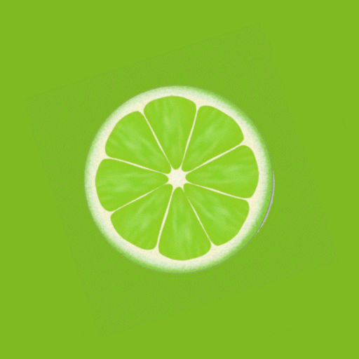

Web livro de receitas
Suco de Limão
Ingredientes:
12 limões
1 l de água gelada
Gelo
1 colher de sopa e 1/2 de açúcar
Modo de preparo (10 min):
- Descascar os limões e tirar as sementes. Colocar no liquidificador junto com os outros ingredientes. Bater e em seguida coar. É uma delícia.

Sirva-se
Serve até 8 pessoas
Pagina inicial